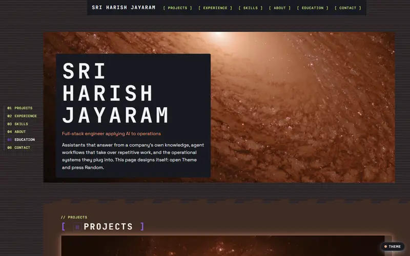
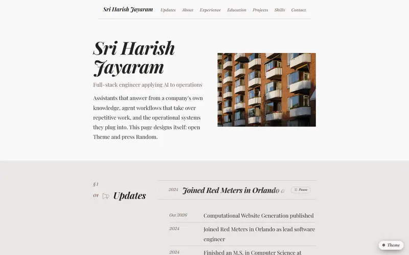
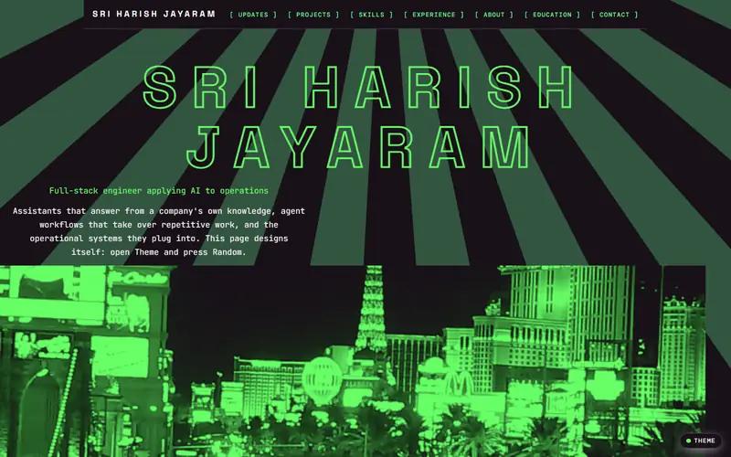
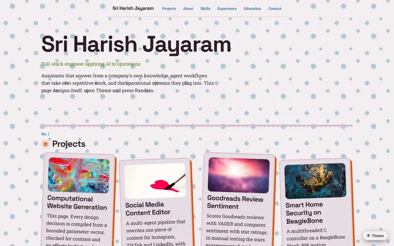
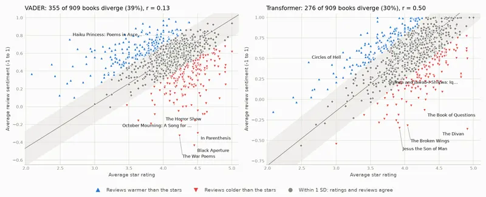

Retrieval-augmented assistants that answer from a company's own knowledge, agent workflows that take over repetitive work, and the operations software they plug into, each taken from prototype to production use.
Lead engineer across full stack, AI automation and IoT
Where
Orlando, Florida
Since
2024
Focus
Applied AI in operations
Also
IoT and AWS
Before
Enterprise Java at Cognizant; M.S. Computer Science, George Mason, 2024
01
What I work on
Applied AI in operations
A retrieval-augmented assistant built on Amazon Bedrock, LangChain and vector search that answers technical questions from internal documentation, and a CrewAI agent workflow, both in production use.
Automation
Event-driven workflows across business systems in n8n, Google Apps Script and HubSpot Workflows, replacing manual hand-offs between teams.
Operations software
One system of record for estimates, inventory, procurement, bill of materials, production and customer success, synced both ways with HubSpot and QuickBooks Online.
Getting it adopted
Writing the policies, training the people who use these systems, and following each rollout until it is actually used.
Also
Edge to cloud
Modbus RTU/TCP acquisition with ZeroMQ and Redis on the device, MQTT into AWS IoT Core, Timestream for time series, Cognito and IAM for identity.
Full-stack product
React front ends for an on-device operator console and a customer web app, with Node.js, Flask and FastAPI services behind them.
02
Selected work
01Flagship · 2026
Computational Website Generation
A portfolio that designs itself: every page is compiled from a bounded parameter vector, checked for accessibility, and measured so that Random never shows the same design twice.




The same content under four of the ten curated themes. Random draws new ones.
Problem
A site built from a template looks like every other site built from it. Can a page design itself, new each time, without ever shipping one that is hard to read or a near-repeat?
Approach
A page is an 82-axis vector in seven layers, from palette and type to imagery and motion. Random samples one of 14 archetype regions; Zod clamps every range, contrast is asserted rather than repaired, and an effects budget keeps it restrained. A draw must clear an Oklab-based novelty floor and change at least four of the seven layers before it is compiled to CSS variables.
My role
Sole developer: the design space, the engine, the tests and the deployment.
Outcome
A static site with 10 curated themes and 242 tests, including a 1,000-draw run that never repeats a recent page. Any generated design can be shared as a link that reopens it exactly.
Paste a post, or a link to an article, and get it rewritten for Instagram, TikTok and LinkedIn by a team of agents.
Problem
One post rarely fits every platform: each has its own character and hashtag limits, audience and tone.
Approach
One CrewAI crew per platform, all running at once: an editor drafts, a critic reviews and the editor rewrites. Platform rules live in a single TOML file, LangChain's Tavily tools turn a link into article text and find hashtags in current use, and each task returns a Pydantic model.
My role
Sole developer of the 2024 original and the 2026 rebuild.
Outcome
A post per platform with its hashtags, a character count checked against the limit and the critic's notes. A no-invented-facts rule stops the made-up quotes the first version produced, and the tests run against a stubbed model, with no API key.
Finds books whose star ratings and written reviews disagree.

Problem
A star rating is a blunt summary. Does it match what readers actually write?
Approach
Every review is scored with VADER and with a DistilBERT transformer, cached in SQLite, and compared per book once both scales are standardised: a book diverges when its sentiment and its stars sit at least one standard deviation apart.
My role
Sole developer of the 2019 original and the 2026 rebuild.
Outcome
Across 909 poetry books and 23,895 reviews, the transformer flags 30% of books and VADER 39%. VADER mistakes the subject for the opinion, reading war and elegy poetry as negative even under five-star reviews.
A multithreaded home security controller in C, the term project for Real-Time and Embedded Systems at George Mason University.
Problem
A security controller has to watch several sensors at once and answer each one without missing the others.
Approach
Three concurrent POSIX threads on a BeagleBone Black: a PIR sensor triggers the alarm while the system is armed, a four-button keypad sequence arms and disarms it, and a water sensor read through the on-board ADC raises the alarm on a leak. GPIO is driven through Linux sysfs.
My role
Team lead of six. I planned the control logic and wrote most of the C.
Outcome
A controller that runs all three tasks concurrently on the board, with standalone component tests for the keypad and the water sensor.
Lead software engineer across full stack, AI automation and IoT, in Orlando, Florida. I own the stack end to end, from the operations platform and web apps to the cloud and on-device services behind the company's RedMeter instruments.
2022 — 2024
M.S. in Computer Science, George Mason University
GPA 3.87/4.0 and the Outstanding Academic Achievement Award. Coursework included real-time and embedded systems on a BeagleBone Black.
2021 — 2022
Programmer Analyst, Cognizant
Spring Boot REST services and Angular UI for a production insurance-claims platform; sprint lead for two sprints, and the Sapphire Award for delivery and documentation.
2017 — 2021
B.E. in Computer Science, Sathyabama Institute of Science and Technology